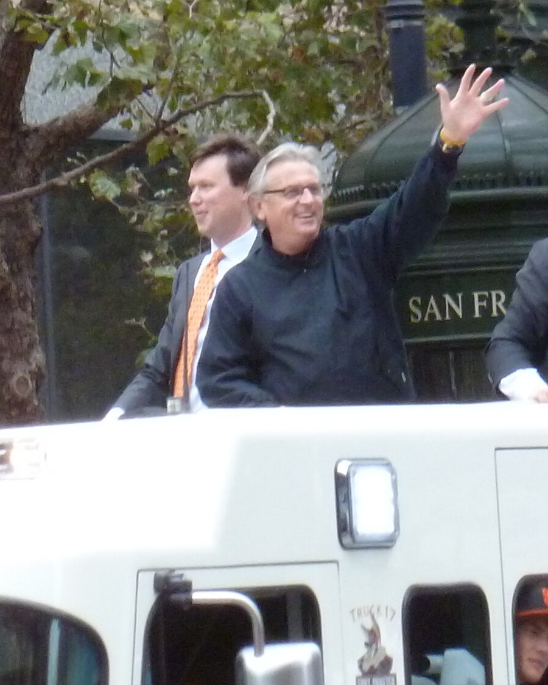
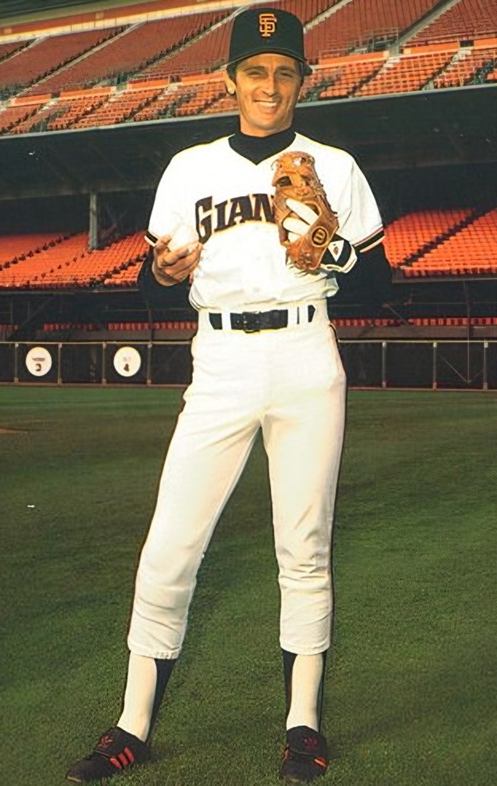
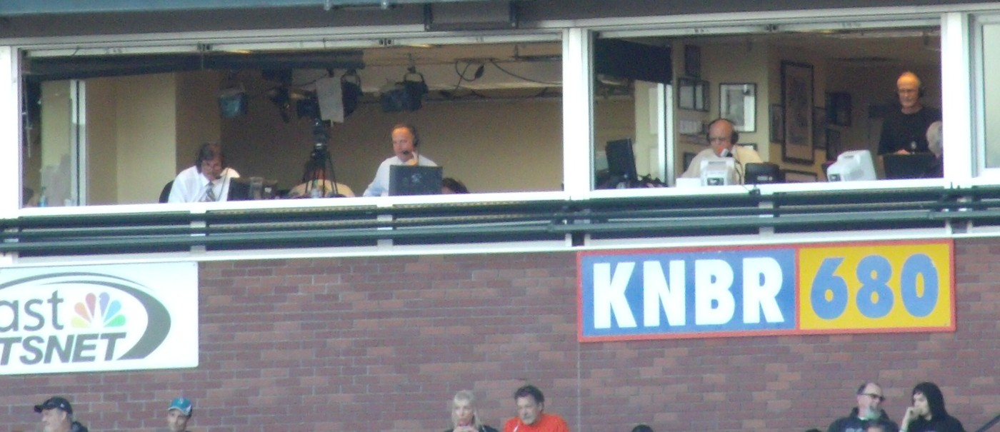
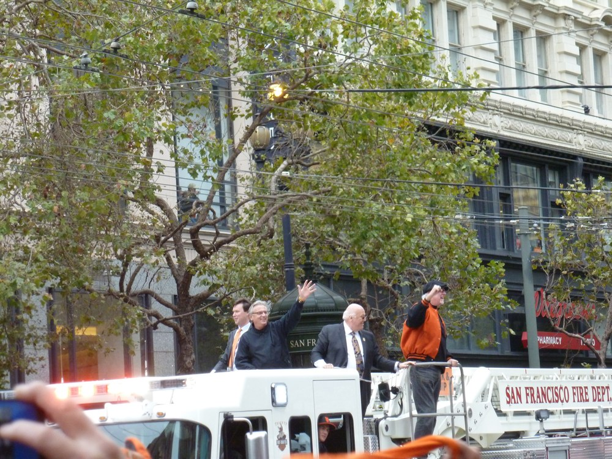
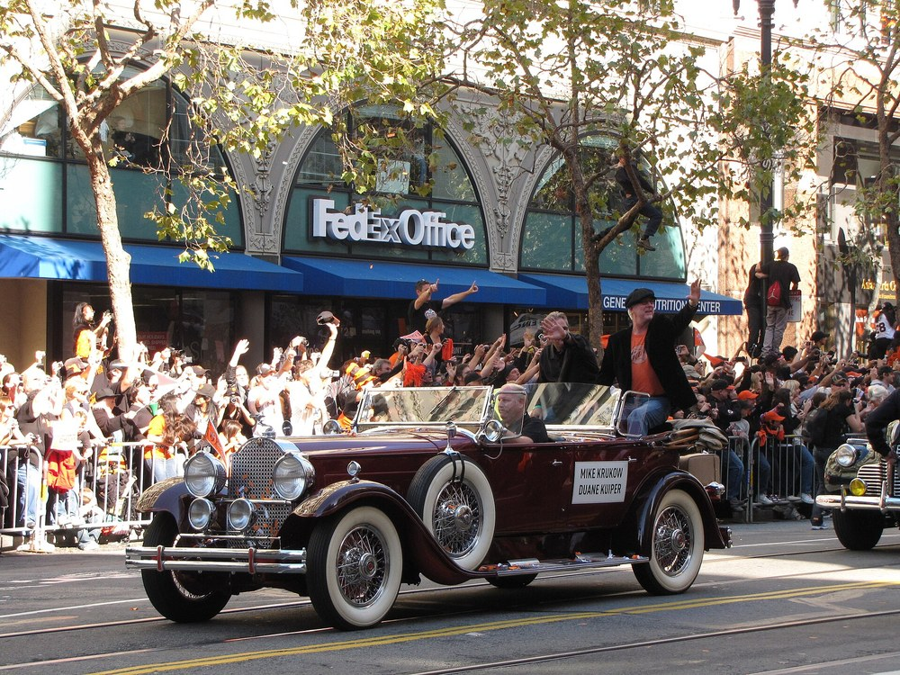
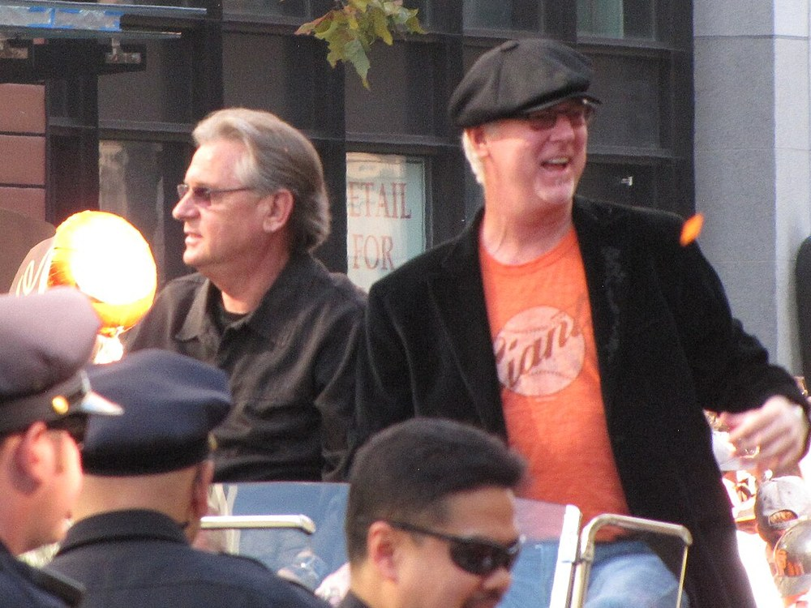

Duane “Kuip” Kuiper
One home run in 3,379 at bats, and he's spent forty years telling us when everybody else's were outta here.
The Duane Kuiper Story
If you grew up a Giants fan any time after the mid 1980s, there's a decent chance Duane Kuiper's voice is wired into your brain right next to your parents'. The slow, rising build on a fly ball. The pause. Then the payoff. He's been on our TVs and radios for most of four decades, and for 36 of those years he had Mike Krukow sitting next to him, which is about as good as baseball broadcasting gets anywhere.
He was born June 19, 1950, in Racine, Wisconsin, and grew up on his family's dairy farm in Sturtevant. His high school team in Racine played a 15 game schedule, which is hardly a schedule at all. He went to junior college in Centerville, Iowa, then to Southern Illinois, where the 1971 Salukis lost the College World Series final to USC. Teams kept drafting him, the Yankees, the Seattle Pilots, the White Sox, the Reds, the Red Sox, and he kept saying no until Cleveland took him in January 1972 and he signed for an $8,000 bonus.
He came up with Cleveland on September 9, 1974, and by 1975 he was their second baseman. He was a glove first guy, honestly a glove only guy some years, and a really good one. He led American League second basemen in fielding percentage in 1976 and 1979, he was team captain, and the Cleveland media named him the club's Man of the Year in 1977. He scored the only run in Dennis Eckersley's no hitter that May, hit two bases loaded triples in one game at Yankee Stadium in 1978, and played second behind Len Barker's perfect game in 1981. Cleveland fans voted him one of the 100 greatest players in franchise history in 2004.
And then there's the home run. One. On August 29, 1977, in his 1,382nd big league at bat, on ABC's Monday Night Baseball, he took Steve Stone of the White Sox into the right field seats. He never hit another. 3,379 at bats, 917 hits, one homer, and no player in the live ball era has more at bats with only one. He's been milking it on the air ever since, and I'd be disappointed if he hadn't.
In November 1981 Cleveland traded him to San Francisco for Ed Whitson. He wore number 18, backed up Joe Morgan in 1982, and set a Giants record that year with 14 pinch hits while the club made a real September run at the division. He hung around as a utility guy through 1983 and 1984, and his last game came on June 27, 1985. He finished at .271 over 12 seasons.
The broadcasting started before the playing stopped. In Cleveland he'd recorded daily reports for a small station, and in San Francisco he took over Joe Morgan's pregame report on KNBR and ran his own KNBR show from 1982 to 1985. When the Giants released him in 1985 he went right into the booth, and he called Giants games on radio and TV through 1992. When it looked like the team might move to Florida, he took a job calling the expansion Rockies in 1993. The Giants stayed, and so, in 1994, did he. He's never left again.
Krukow joined the booth in 1990, and that's where the magic is. They'd been teammates in the 80s, and on the air they sound like two guys who'd rather be at the ballpark than anywhere else on earth, which by every account is exactly the truth. Kruk is the storyteller and the professor. Kuip is the timing, the deadpan, the guy who knows when to drop one dry line and then go quiet. They narrated MVP Baseball video games together from 2003 to 2005, they turned “torture” into the official word for the 2010 Giants, and by the end they'd been together longer than any partnership in Giants broadcasting history.
He was on the call for almost everything that mattered. Barry Bonds' 715th, where his call became the one people use because the radio mic cut out. Bonds' 756th on August 7, 2007, on TV. The final out of the 2010 World Series on KNBR, the first title San Francisco ever won. Matt Cain's perfect game on June 13, 2012. His scorecards from 756, Randy Johnson's 300th win, Cain's perfect game and Gaylord Perry Day in 2016 sit in the Hall of Fame in Cooperstown.
The honors piled up. Thirteen local Emmys. California Sportscaster of the Year from the National Sports Media Association in 2020 and 2025. A finalist for the Ford C. Frick Award, the Hall of Fame's broadcasting honor, in 2014 and again on the 2023, 2024, 2025 and 2026 ballots, with Krukow beside him on two of them. The Bay Area Radio Hall of Fame named him to its class of 2026.
The last few years have been brutal on him and he's never once made it about himself on the air. In June 2021 he announced he needed chemotherapy right away, stepped away for more than six weeks, and then walked back into the booth on July 24 against Pittsburgh without telling Krukow. On February 20, 2022, his wife Michelle, the mother of his kids Cole and Dannon, died unexpectedly at 64. He came back anyway, calling home games and doing most road games from San Francisco that year, and he was traveling more again by 2023.
2026 was the hardest year yet. In August, Krukow announced his inclusion body myositis was forcing him to retire at season's end. On September 20 Kuiper revealed he'd been diagnosed with throat cancer, unrelated to the 2021 illness, and was being treated at Stanford Medicine. He missed games that week, and on September 27 he was right there for Krukow's final broadcast against the Dodgers, taping a pot bellied stick figure of himself next to the Atta Babe sign in right field before the game. The Giants named their upper level booth the Kruk and Kuip Broadcast Booth that day, and Mayor Daniel Lurie gave them the keys to the city.
He's 76 now. He lives in Danville, he has two granddaughters, Andy and Kit, and he's said he plans to keep calling Giants games in 2027 without Kruk at his side. On November 1 he showed up at a Warriors game and lifted his hat to the crowd, and every Giants fan I know exhaled a little.
What He Meant to Us
I don't remember learning baseball from Kuip. I just remember that he was always there. Weeknight games at Candlestick on a fuzzy TV, then the new park, then the dynasty years, and the voice never changed. When I hear him say it's outta here, some part of me is about nine years old again.
What gets me is how much he and Kruk clearly loved each other. You can't fake 36 years of that. Kruk would tell some poor fan to grab some pine, meat, Kuip would lose it, and the game would almost become background, and somehow that's what made it feel like home. Kuip has said that line is his favorite thing Kruk ever came up with. Mine too. I'd sit there grinning at a 7 to 2 loss in July because the booth was having the time of its life.
And the man hit one home run. One! He's the most famous home run caller in the history of a franchise that had Mays, McCovey and Bonds, and his own career total is one. I can't think of anything more Kuip than that, and I can't think of anything that makes me like him more.
The last few years have been hard to watch. The chemo in 2021. Michelle in 2022. Then 2026, when we lost Kruk to retirement and found out the same month that Kuip was fighting cancer again. When he walked back into that booth for Kruk's last game, a week after telling everyone about the diagnosis, I didn't really keep it together. Neither did he, by the end of that ceremony.
He says he's coming back in 2027 and I'm holding him to it. Get well, Kuip. Give us one more summer of it is outta here. We'll wait through the pause like we always have.
Career Player Stats

| Year | Team | G | AB | R | H | 2B | 3B | HR | RBI | SB | BB | AVG | OBP | SLG | OPS |
|---|---|---|---|---|---|---|---|---|---|---|---|---|---|---|---|
| 1974 | CLE | 10 | 22 | 7 | 11 | 2 | 0 | 0 | 4 | 1 | 2 | .500 | .542 | .591 | 1.133 |
| 1975 | CLE | 90 | 346 | 42 | 101 | 11 | 1 | 0 | 25 | 19 | 30 | .292 | .362 | .329 | .691 |
| 1976 | CLE | 135 | 506 | 47 | 133 | 13 | 6 | 0 | 37 | 10 | 30 | .263 | .303 | .312 | .615 |
| 1977 | CLE | 148 | 610 | 62 | 169 | 15 | 8 | 1 | 50 | 11 | 37 | .277 | .324 | .333 | .657 |
| 1978 | CLE | 149 | 547 | 52 | 155 | 18 | 6 | 0 | 43 | 4 | 19 | .283 | .311 | .338 | .649 |
| 1979 | CLE | 140 | 479 | 46 | 122 | 9 | 5 | 0 | 39 | 4 | 37 | .255 | .313 | .294 | .607 |
| 1980 | CLE | 42 | 149 | 10 | 42 | 5 | 0 | 0 | 9 | 0 | 13 | .282 | .337 | .315 | .652 |
| 1981 | CLE | 72 | 206 | 15 | 53 | 6 | 0 | 0 | 14 | 1 | 8 | .257 | .284 | .286 | .570 |
| 1982 | SF | 107 | 218 | 26 | 61 | 9 | 1 | 0 | 17 | 2 | 32 | .280 | .375 | .330 | .705 |
| 1983 | SF | 72 | 176 | 14 | 44 | 2 | 2 | 0 | 14 | 0 | 27 | .250 | .353 | .284 | .637 |
| 1984 | SF | 83 | 115 | 8 | 23 | 1 | 0 | 0 | 11 | 0 | 12 | .200 | .273 | .209 | .482 |
| 1985 | SF | 9 | 5 | 0 | 3 | 0 | 0 | 0 | 0 | 0 | 1 | .600 | .667 | .600 | 1.267 |
| Career | 1,057 | 3,379 | 329 | 917 | 91 | 29 | 1 | 263 | 52 | 248 | .271 | .325 | .316 | .641 |
Regular season batting. Giants seasons 1982 to 1985; his lone home run came with Cleveland on August 29, 1977. Scroll the table sideways on a phone.
The Broadcast Career
- 1982 to 1985
KNBR 680
Hosted his own Giants radio show while he was still playing second base for the club.
- 1986 to 1992
San Francisco Giants
Went straight from the bench to the booth after his release, calling Giants games.
- 1993
Colorado Rockies
One season as a voice of the expansion Rockies, when it looked like the Giants might leave town.
- 1994 to present
San Francisco Giants
Back home for good, mostly on TV play by play (now NBC Sports Bay Area) plus KNBR radio. Kruk went full time beside him the same year.
- 2021
San Francisco Giants
Missed a chunk of the season for chemotherapy and walked back into the booth in July without telling Kruk.
- 2026
San Francisco Giants
Announced a throat cancer diagnosis on September 20, made it back for Kruk's farewell on September 27, and says he's coming back in 2027.
In Pictures




The Signature Calls
High drive to right! Headed to the water ... it ... is ... outta ... here!
The signature, here on a Mike Yastrzemski game winner. The pause between every word is the whole thing, and Krukow has called it his favorite.
756! Bonds stands alone.
August 7, 2007, on TV, the moment Barry Bonds passed Hank Aaron. Four words and a number, and that's how a whole city remembers it.
On the ground, Arias, from deep third, got him! And that's a perfect game!
The last out of Matt Cain's perfect game, June 13, 2012. Still gives me chills.
Giants baseball... torture!
Coined in 2010 for all those one run nail biters the Giants somehow kept winning. It became the motto of the first championship team in San Francisco history.
Bailey's on the move. Bailey's on the move. And this game is over.
Patrick Bailey's walk off, inside the park homer against the Phillies, July 8, 2025. Kuip in his mid 70s and he still got there in time.
And that's how this game gets started.
How he brings us into the first pitch. You hear it and you know the night's officially on.
Sandovaaaaal ... dag yabbel got 'em!
Pablo Sandoval charging a slow roller at Chase Field. Kuip has said he has no idea what dag yabbel means, which makes it even better.
Why We Love Him
Because he never sounds like he's working. Kuip calls a ballgame like he's sitting on your couch with a beer, and then something big happens and that voice drops into a register that makes the hair on your arms stand up. High drive. Pause. It is. Pause. Outta here. Nobody in baseball builds a home run call slower, and nobody makes the wait feel better.
Then there's Kruk. You can't separate them and you shouldn't try. For 36 years they made each other laugh on purpose and by accident, and the best stuff was never scripted. Kuip would feed Kruk a straight line and then sit back and let him go, and you could hear him enjoying it. He's said he'll miss the two of them entertaining each other. So will we, Kuip.
Because he's a self deprecating guy in a business full of egos. He hit one home run in his whole career and he'll bring it up before you can. He's the guy who reacted to Patrick Bailey's walk off inside the park homer by admitting his own voice didn't see it coming. He's the guy who texted his best friend that the tribute call he made in his honor was the worst home run call he'd ever heard.
Look at how he's carried himself through all of it. Chemo in 2021, losing Michelle in 2022, throat cancer in 2026, and every time, the first thing out of his mouth was about somebody else. When he announced the cancer, his statement was about getting back in time to celebrate Kruk. Then he showed up and did exactly that.
And because his voice is what summer sounds like here. Fog coming over the light standards, the radio on in the garage, a tight one in the eighth, and Kuip telling you, in that big John Wayne baritone, that this is Giants baseball. Torture. He named it. We lived it with him.
The Calls We'll Never Forget
- August 29, 1977
The one and only home run
Monday Night Baseball on ABC, Cleveland hosting the White Sox in front of 6,236 people. With one out in the first, Kuiper hit a 1-0 slider from Steve Stone into the right field seats. It was his 1,382nd major league at bat, and Cleveland won 9 to 2. The game was blacked out in Cleveland but it aired back home in Racine. Lou Brock broke Ty Cobb's stolen base record that same day, which Kuip will happily tell you got the bigger headline. He never hit another one, and he's been joking about it in the booth for forty years.
- August 7, 2007
756, Bonds stands alone
Bottom of the fifth at AT&T Park, full count, Mike Bacsik of the Nationals on the mound. Bonds drove it into the right center field bleachers to pass Hank Aaron, and Kuiper had the TV call: “And Bacsik deals. And Bonds hits it high, hits it deep! It is outta here!” Then he gave the moment its name with “756! Bonds stands alone.” His scorecard from that night is in Cooperstown.
- November 1, 2010
The first one, on KNBR
Kruk and Kuip moved over to radio for the postseason, so when Brian Wilson struck out Nelson Cruz swinging to end Game 5 in Arlington, it was Kuiper calling the final out of the first World Series title San Francisco had ever won, and the franchise's first since 1954. Earlier that season he'd started calling these Giants torture. That night it was all worth it.
- June 13, 2012
Arias from deep third
With Krukow off that night, Kuiper and Jon Miller had the TV call as Matt Cain threw the first perfect game in Giants history, 10 to 0 over Houston with 14 strikeouts. Kuip had Gregor Blanco's diving catch in the seventh, “Blanco's gonna dive, and he makes the catch!”, and then the last out: “On the ground, Arias, from deep third, got him! And that's a perfect game!” The scorecard went to the Hall of Fame.
- July 24, 2021
Surprise, Kruk
He'd been gone since June 6 for chemotherapy, more than six weeks, and the Giants kept his return quiet. Right before first pitch against the Pirates, there he was in the booth. Krukow found out on the air, called himself the only guy in the Bay Area who didn't know, and said it was a sight for sore eyes. On the pregame show Kuip's explanation was perfect: “Hey, I missed me.”
- July 8, 2025
Bailey's on the move
Giants down 3 to 1 to the Phillies in the ninth at Oracle Park, two on, one out. Patrick Bailey hit one off the brick in right center, it kicked away from Nick Castellanos and Brandon Marsh, and Bailey came all the way around for a three run, walk off, inside the park homer, 4 to 3. Kuip's call went straight up into the rafters: “Bailey's on the move. Bailey's on the move. And this game is over.” Then: “Oh, my goodness. I did not see that coming.” His voice, he admitted, didn't either.
- September 27, 2026
Kruk's last game, and Kuip was there
A week after announcing his throat cancer, Kuiper made it back for Krukow's final broadcast, a 5 to 1 loss to the Dodgers in the season finale. Before the game he taped a pot bellied stick figure labeled KUIP next to the Atta Babe, Kruk sign on the right field wall, and Krukow said it took the edge off. On the air Kuip told him, “I can honestly tell you my friend, it's been a blast.” At the postgame ceremony the Giants unveiled the Kruk and Kuip Broadcast Booth, and Kuip told the crowd, “He makes me laugh, he makes me cry, he makes me think.”
What They Said About Kuiper
“I told people that when this was going to be reported, this would be, for our fans, as big a story as when they traded Willie Mays.”
“Kruk and Kuip have a way of making Giants fans feel they’re part of something bigger than a baseball game.”
“He’s a pro. He’s ready to be there. He’s always prepared. When we’re at the ballpark, there’s no place we’d rather be.”
“I envy Duane Kuiper for getting to work with Mike Krukow all these years. You’ve had the treat of nearly four decades of listening to the best broadcast booth in all of baseball.”
“We missed him. And we got him back.”
“Health-wise, if I'm fine, I'll go until AI takes over.”
“Me and Sadaharu Oh.”
Duane Kuiper: Fast Facts
What years was Duane Kuiper with the San Francisco Giants?
Duane Kuiper was with the San Francisco Giants over 2 stints (1982 to 1992 and 1994 to present) in the broadcast booth.
What number did Duane Kuiper wear?
Duane Kuiper wore number 18 as a Giants player.
What are Duane Kuiper's signature numbers?
1 career home run, in 3,379 big league at bats; 13 local Emmy Awards; 36 years of Kruk and Kuip, 1990 to 2026; 5 times a Ford C. Frick Award finalist.
What were Duane Kuiper's biggest honors?
Bay Area Radio Hall of Fame, class of 2026; 13 local Emmy Awards; Ford C. Frick Award finalist (2014, 2023, 2024, 2025 and 2026 ballots); California Sportscaster of the Year, National Sports Media Association (2020, 2025); Kruk and Kuip Broadcast Booth named at Oracle Park (September 27, 2026).
What are some of Kuiper's biggest moments?
The one and only home run (August 29, 1977); 756, Bonds stands alone (August 7, 2007); The first one, on KNBR (November 1, 2010). Every one is in the Calls We'll Never Forget section above.